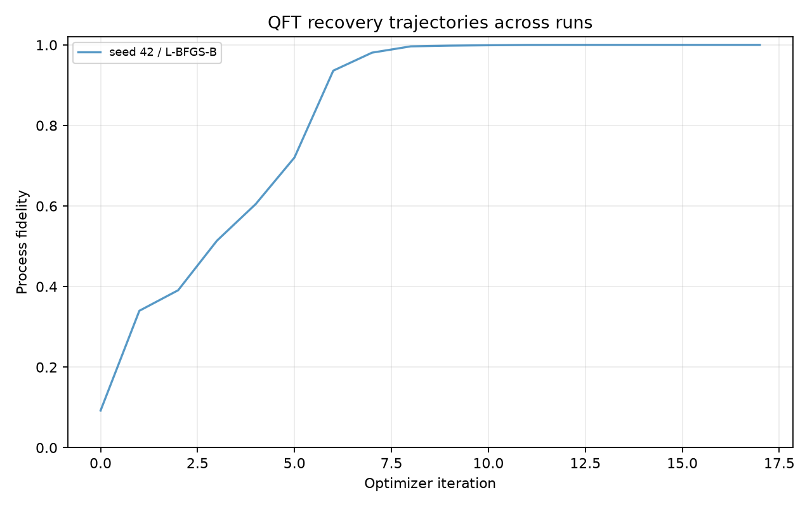
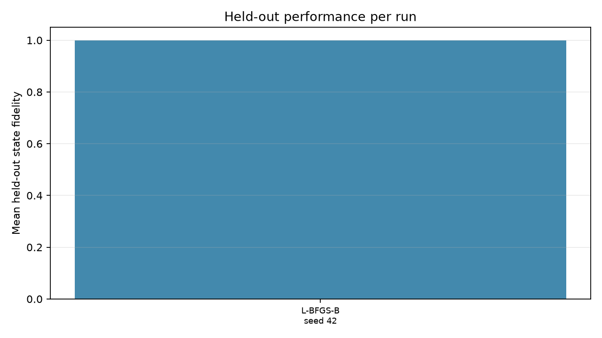

1 portable run bundles found.
| run_id | status | optimizer | seed | protocol_version | comparison_group | initial_process_fidelity | qft_process_fidelity | test_state_fidelity_mean | test_output_total_variation_mean | frequency_accuracy | frequency_cross_entropy | iterations | report |
|---|---|---|---|---|---|---|---|---|---|---|---|---|---|
| 20261017T000333116098Z_qft-recovery_seed-0042_b7a380cf | FINISHED | L-BFGS-B | 42 | 0.1.0 | qft-recovery-baseline | 0.09211160392656959 | 0.9999999999999791 | 0.9999999999999825 | 6.852469536917398e-08 | 1.0 | 1.7208456881690106e-14 | 17 | results/runs/20261017T000333116098Z_qft-recovery_seed-0042_b7a380cf/artifacts/report.html |

